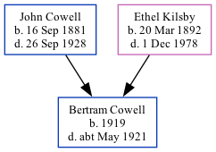

Bertram S Cowell 1919 - c1921
[ Home ] | [ Calendar ] | [ Surnames Index ] | [ Family History ]The child of John Cowell (a general carman) and Ethel Kilsby, Bertram Cowell, the fourth cousin once-removed on the mother's side of Nigel Horne, was born in Weedon Bec, Northamptonshire, England in 19191.
He died c. May 1921 in Daventry, Northamptonshire, England2 (died 1921 aged 17 months plot 636).
Parents
- John Francis was born on Sep 16, 1881
- Ethel Blanche was born on Mar 20, 1892
Citations
- England & Wales, Birth Index: 1916-2005 Online publication - Provo, UT, USA: The Generations Network, Inc., 2008.Original data - General Register Office. England and Wales Civil Registration Indexes. London, England: General Register Office. © Crown copyright. Published by permission of the Cont
- England & Wales deaths 1837-2007 - Findmypast
Media
England & Wales deaths 1837-2007 - BMD/D/1921/2/AZ/000172/097
Family Tree
Generated by Ged2Site. Last updated on Jul 20, 2025